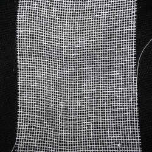
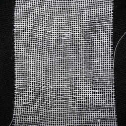

DISCLAIMER
This guide is by no means 100% universal, but I still think it could help you raise your caterpillar. Each species has slightly different needs. My caterpillar is a Garden Tiger Moth, so I will mainly be describing my experience with this moth species.
Handling
The first thing to keep in mind is that caterpillars need to be handled with care. They are extremely delicate, so it could be fatal if you dropped them by mistake from even just two inches off the ground. Be careful!
Some caterpillars have a “fluffy” coat, which is supposed to make them unappealing to predators. These hairs can sometimes irritate sensitive skin and cause allergic reactions, so keep that in mind when handing them. If you suspect that you might have sensitive skin, it’s best to handle them in gloves (or not at all).
My woolly bear caterpillar didn’t irritate my skin, so I carefully picked it up with my hands when I first found it on the ground.

Host Plant
The plant which you found your caterpillar on is most likely it’s host plant. This means that this plant is the caterpillar’s main food source. If you find it on the ground, you should look around the area and scan for its potential food sources, they shouldn’t be too far away. If you aren’t sure, you can always look up a description of the caterpillar you found online and look for pictures that look like it. That will help you identify its food source and species.
You can also find some of the common caterpillar types on my website by clicking this link.
Caterpillars 

Enclosure
Now that you’ve got your caterpillar, you will need an enclosure. It doesn’t have to be very spacious or tall, except if you found your caterpillar on a tree, then you would need to fit a small tree branch in there. I used a pretty big container, but it could certainly be smaller.
One of the only things that a caterpillar does is eat, so it also poops a lot. To make the job of cleaning the container easier, I recommend putting a paper towel at the bottom. Then you could just switch it out once a day and it won’t take long.
It’s crucial that the caterpillar has enough air, so instead of a plastic lid, I strongly recommend putting a sheet of gauze on top of the container and securing it with a string or a large rubber band.
Different caterpillars need different levels of humidity, but for my caterpillar I sprayed the container once a day from afar with water. Two sprays should be plenty.


Feeding
As I’ve mentioned previously, caterpillars only eat their host plants, so make sure you have regular access to their food source. I found mine on the staircase, so I did some research on this moth species and identified its common food source. I experimented by giving it different plants to eat until I eventually figured out which ones it liked the most. My caterpillar seemed to enjoy eating yarrow and dandelion leaves the most.

WARNING!
You should always take care to wash and dry the plants you find before feeding them to your caterpillar. They might have parasites, tiny larvae, or harmful bacteria on them. The following image shows what happened to one of my caterpillars when I accidentally fed it unwashed plants (at least, I think that’s what happened). You might find it disturbing, so please skip these images if you don’t like “bug gore”.


Cocoon
If you’ve been properly feeding and taking care of your caterpillar, it will start growing bigger and eventually become inactive or slow. That means that it’s getting ready to form a chrysalis and begin its morphing stage. During this time, I recommend not disturbing the caterpillar too much and stopping touching it for some time. Change its food only by removing the old leaves and dropping new ones in, don’t relocate the caterpillar for cleaning.
After a week or so, your caterpillar should have formed its cocoon and stopped moving at all. At this point, you can remove everything from the container. This will be the waiting stage.
My Garden Tiger Moth caterpillar created a small tent out of dry leaves, so I thought it disappeared at first. Don’t worry if this happens, and I recommend not tearing the leaves apart to look inside; this might disturb the caterpillar.
Waiting
Congratulations! You’ve made it this far. Now it’s time to patiently wait for the caterpillar to hatch. It usually only takes several weeks, depending on your caterpillar species, but mine took over a month. I still don’t know the reason for that because I found my caterpillar in the summer, but I know that this species can take longer to hatch in the colder months.
Don’t worry and be patient.


Hatching
This can happen unexpectedly, so it’s best to put your cocoon in a wider and taller container with a stick that the newly hatched moth or butterfly can climb onto. When it hatches, its wings will be wet, so it will be actively drying them out. When you see that it has hatched, place it on a wide and flat surface so that it can dry its wings. Here is a video of my Garden Tiger Moth drying its wings.
After about half an hour the process should be done.
Letting it go!
I know this part might be a little sad. I got very attached to my moth, but I still realized that letting it go would be the right thing to do.
Go outside and set it down somewhere safe from predators, and then celebrate! You just successfully raised a caterpillar into a moth/butterfly!